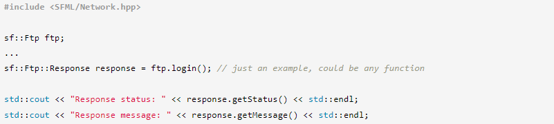
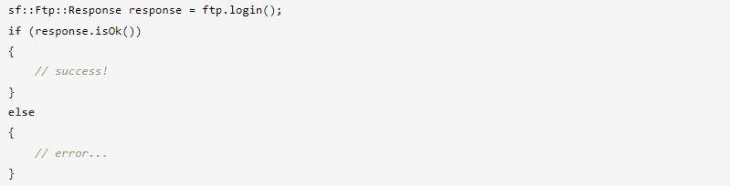
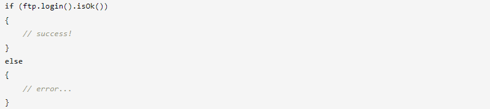
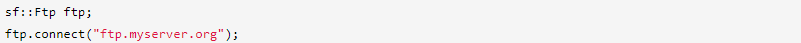
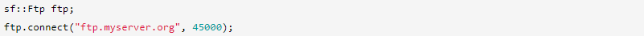
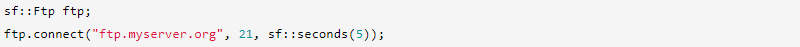
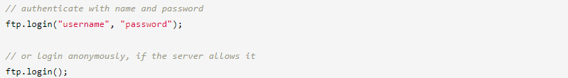
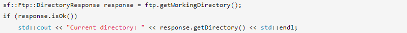
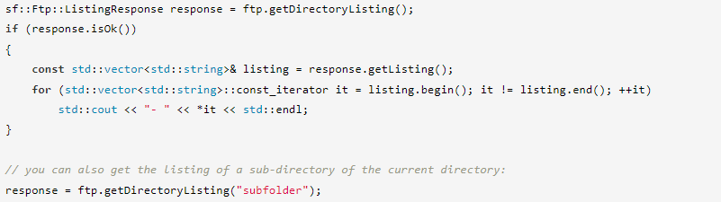

Если вы знаете, что такое FTP, и просто хотите знать, как использовать класс FTP, предоставляемый SFML, вы можете пропустить этот раздел.
FTP (протокол передачи файлов) — это простой протокол, позволяющий манипулировать файлами и каталогами на удаленном сервере. Протокол состоит из таких команд, как «создать каталог», «удалить файл», «загрузить файл» и т. д. Вы не можете отправлять FTP-команды на любой удаленный компьютер, на нем должен быть запущен FTP-сервер, который может понимать и выполнять команды, которые посылают клиенты.
Так что же вы можете делать с FTP и чем он может быть полезен для вашей программы? По сути, с помощью FTP вы можете получить доступ к существующим удаленным файловым системам или даже создать свои собственные. Это может быть полезно, если вы хотите, чтобы ваша сетевая игра загружала ресурсы (карты, изображения и т. д.) с сервера или чтобы ваша программа автоматически обновлялась при подключении к Интернету.
Если вы хотите узнать больше о протоколе FTP, статья в Википедии содержит более подробную информацию, чем это краткое введение.
Класс, предоставляемый SFML, — это sf::Ftp (удивительно, не так ли?). Это клиент, что означает, что он может подключаться к FTP-серверу, отправлять ему команды и загружать или скачивать файлы.
Каждая функция класса sf::Ftp оборачивает команду FTP и возвращает стандартный ответ FTP. Ответ FTP содержит код состояния (похожий на коды состояния HTTP, но не идентичный) и сообщение, информирующее пользователя о том, что произошло. Ответы FTP инкапсулируются в классе sf::Ftp::Response.
Код состояния можно использовать для проверки того, была ли команда выполнена успешно или нет: коды ниже 400 означают успех, все остальные — ошибки. Вы можете использовать функцию isOk() в качестве ярлыка для проверки кода состояния на успешность.
Если вас не волнуют детали ответа, вы можете проверить его успешность с помощью еще меньшего количества кода:
Для удобства чтения эти проверки не будут выполняться в следующих примерах этого руководства. Не забудьте выполнить их в своем коде!
Теперь, когда вы понимаете, как работает класс, давайте посмотрим, что он может делать.
Первое, что нужно сделать, это подключиться к FTP-серверу.
Адрес сервера может быть любым допустимым. sf::IpAddress: URL-адрес, IP-адрес, сетевое имя, ...
Стандартный порт для FTP — 21. Если по какой-то причине ваш сервер использует другой порт, вы можете указать его в качестве дополнительного аргумента:
Вы также можете передать третий параметр, который представляет собой значение тайм-аута. Это избавляет вас от необходимости ждать вечно (или, по крайней мере, очень долго), если сервер не отвечает.
После того, как вы подключитесь к серверу, следующим шагом будет ваша аутентификация:
Вот краткое описание всех команд, доступных в классе sf::Ftp. Помните одну вещь: все эти команды выполняются относительно текущего рабочего каталога, точно так же, как если бы вы выполняли команды файла или каталога в консоли вашей операционной системы.
Получение текущего рабочего каталога:
sf::Ftp::DirectoryResponse — это специализированный sf::Ftp::Response, который также содержит запрошенный каталог.
Получение списка каталогов и файлов, содержащихся в текущем каталоге:
sf::Ftp::ListingResponse — это специализированный sf::Ftp::Response, который также содержит запрошенные имена каталогов/файлов.
Изменение текущего каталога:
ftp.changeDirectory("путь/к/новому_каталогу"); // the given path is relative to the current directory
Переход в родительский каталог текущего:
ftp.parentDirectory();
Создание нового каталога (как дочернего по отношению к текущему):
ftp.createDirectory("name_of_new_directory");
Удаление существующего каталога:
ftp.deleteDirectory("имя_каталога_для_удаления");
Переименование существующего файла:
ftp.renameFile("старое_имя.txt", "новое_имя.txt");
Удаление существующего файла:
ftp.deleteFile("имя_файла.txt");
Скачивание (получение с сервера) файла:
ftp.download("remote_file_name.txt", "local/destination/path", sf::Ftp::Ascii);
Последний аргумент — это режим передачи. Это может быть Ascii (для текстовых файлов), Ebcdic (для текстовых файлов, использующих набор символов EBCDIC) или Binary (для нетекстовых файлов). Режимы Ascii и Ebcdic могут преобразовывать файл (концы строк, кодировку) во время передачи в соответствии с клиентской средой. Двоичный режим — это прямая побайтовая передача.
Загрузка (отправка на сервер) файла:
ftp.upload("local_file_name.pdf", "remote/destination/path", sf::Ftp::Binary);
FTP-серверы обычно закрывают соединения, которые некоторое время неактивны. Если вы хотите избежать отключения, вы можете периодически отправлять команду no-op:
ftp.keepAlive();
Вы можете закрыть соединение с сервером в любой момент с помощью функции отключения.
ftp.disconnect();